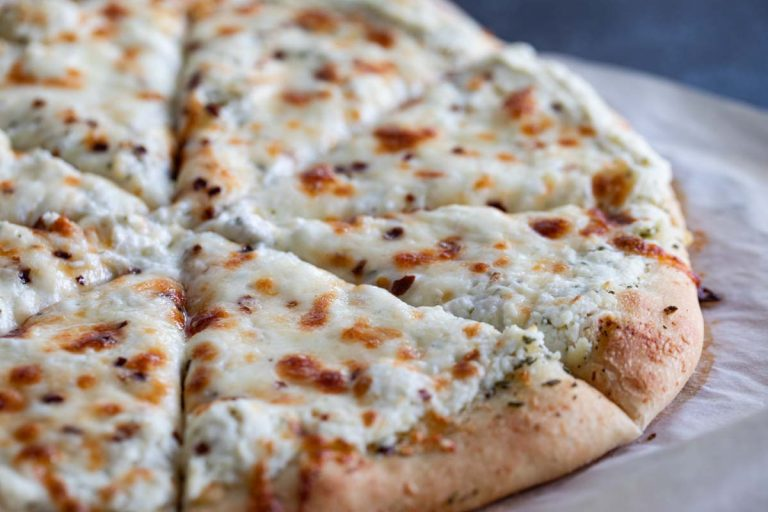

Cheese pizza recipe

Amazing home-made cheese pizza
Ingredients
- Yeast
- Water
- Flour
- Oil
- Salt
- Sugar
Steps
- Prepare the pizza dough through step 6, including preheating the oven to 475°F (246°C) as described in step 4.
- Top the dough with the pizza sauce, then the sliced mozzarella, then the shredded mozzarella, grated Parmesan, then sprinkle with basil.
- Bake for 12-15 minutes. For the last minute, I move the oven rack to the top rack to really brown the edges. That’s optional.
- Slice hot pizza and serve immediately. Cover leftover pizza tightly and store in the refrigerator. Reheat as you prefer. Baked pizza slices can be frozen up to 3 months.